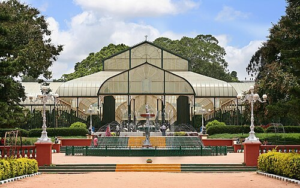
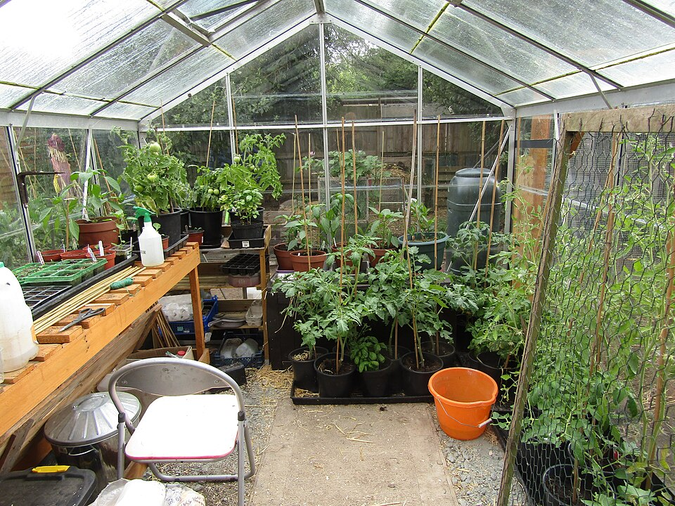
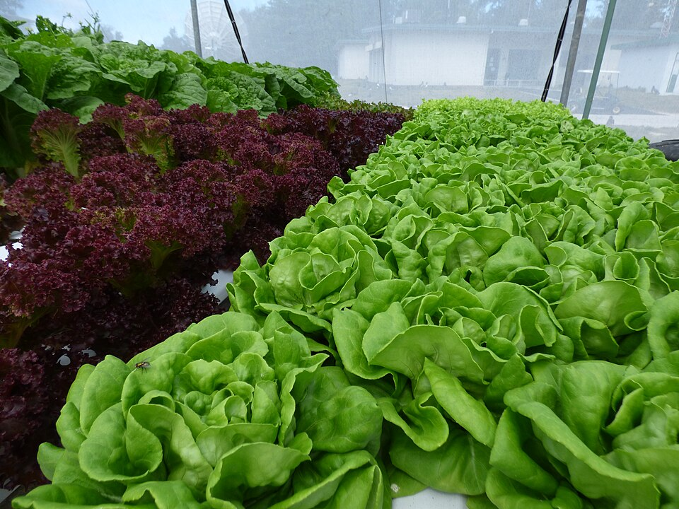

Круглогодичная теплица. Овощи и зелень под LED-досветкой круглый год.
Коммерческий проектСтроим круглогодичную теплицу с климат-контролем и LED-досветкой для коммерческого выращивания овощей и зелени в Перми — с продажей урожая через розницу, маркетплейсы и подписку на еженедельные коробки.
Чтобы производить свежие овощи и зелень локально и круглый год, не завися от сезона и привозной продукции. Климат-контроль, капельное орошение и досветка позволяют получать несколько урожаев в год с одной и той же площади и стабильно поставлять продукцию розничным сетям, маркетплейсам и напрямую подписчикам коробок.
Это коммерческий проект: доля в капитале ООО «АгроСтрой» рассчитывается пропорционально денежной оценке вклада — деньгами, оборудованием, материалами или профессиональной экспертизой. Наёмный труд по договору (монтаж, обслуживание) в долю не конвертируется и оплачивается отдельно как расход. Какая доля полагается за конкретный вклад — указано в списках ниже.
Золотым — критический путь: «Фундамент → Монтаж теплицы → Посадка → 1-й цикл выращивания → Первые поставки», 123 дня. Он определяет минимальный срок проекта. «Оформление подписки» (узлы 3→5→6) идёт параллельно с циклом выращивания и имеет запас времени — маркетинг и приём заявок можно готовить, пока растёт первая партия. Пунктир — техническая связь между этапами без отдельной длительности.
Урожай можно забронировать заранее по подписке — коробка овощей и зелени с еженедельной доставкой, оплата авансом до сбора первого урожая.
Проект оформлен как открытое акционерное общество (в современном законодательстве РФ — публичное акционерное общество, ПАО): капитал разделён на акции, каждая даёт право на дивиденды и на голос на общем собрании акционеров пропорционально числу акций. В отличие от кооператива «Строительный 3D-принтер», где действует принцип «один участник — один голос», здесь влияние на решения прямо связано с размером доли: у кого больше акций, у того больше веса при голосовании. Акции можно свободно продать или переуступить другому лицу — это ключевое отличие открытого акционерного общества от закрытой формы, где обращение долей ограничено кругом участников.
Доли (акции) участников рассчитаны как денежная оценка вклада по четырём таблицам ресурсов — материальные, трудовые, интеллектуальные, финансовые, — в сумме дающая 100% капитала. ООО «АгроСтрой» как инициатор проекта внесло основной материальный вклад (участок, конструкция теплицы, инженерные системы) и удерживает контрольный пакет; Лебедева Ольга, Семёнов Николай, Васильева Татьяна и Медведева Юлия получили доли за трудовой и интеллектуальный вклад — монтаж, агрономию, подбор сортов, управление сбытом. Возможен и наёмный труд по договору без доли — с фиксированной оплатой, для задач, не предполагающих долгосрочного участия в проекте.
Выручка от продажи урожая и подписки на овощной бокс сначала покрывает операционные расходы (семена, удобрения, энергоснабжение теплицы, обслуживание оборудования) и отчисления на развитие — расширение теплицы, обновление систем досветки и орошения. Из оставшейся прибыли выплачиваются дивиденды пропорционально доле каждого акционера. Для первых инвесторов действует приоритет возврата вложений: до момента, пока их первоначальный вклад не окупится, они получают выплаты в первую очередь — это стандартный для акционерной формы механизм защиты ранних инвесторов, компенсирующий более высокий риск на старте проекта.